Section 4.1 Solving a System by Graphing
In Chapter 3 we learned a few ways we can graph one line in the plane. Now we will graph two lines simultaneously and use what we see to identify the solution set to a “system of two linear equations in two variables”.
Subsection 4.1.1 Systems of Two Linear Equations in Two Variables
There are times when two linear equations (each one having two variables—the same two variables) are relevant to some situation at the same time. When this happens, we have a system of two equations in two variables which we can write this way (if the variables are \(x\) and \(y\)):
\begin{equation*}
\left\{
\begin{alignedat}{4}
y \amp {}={} ax \amp {}+{} \amp b \\
y \amp {}={} cx \amp {}+{} \amp d
\end{alignedat}
\right.
\end{equation*}
The large left brace indicates that this is a collection of two distinct equations, not one equation that was somehow changed with algebra into an equivalent equation. In the system above, \(a\text{,}\) \(b\text{,}\) \(c\text{,}\) and \(d\) are specific numbers, while \(x\) and \(y\) are the variables. The two line equations in the system above are both in slope-intercept form, but that is not required. Each line equation could be written in some other form and we would still call this a system of two equations in two variables.
Let’s explore an example of how these things arise.
Example 4.1.2.
Fabiana and David are running at constant speeds in parallel lanes on a track. David starts out ahead of Fabiana, but Fabiana is running faster. We want to determine when Fabiana will catch up with David.
Suppose that Fabiana is running with a speed of \(\frac{9}{4}\,\frac{\text{m}}{\text{s}}\text{.}\) If she started out at position \(0\) meters, then her position in meters after \(t\) seconds is given by
\begin{equation*}
p = \frac{9}{4}t
\end{equation*}
David is running more slowly, at only \(2\,\frac{\text{m}}{\text{s}}\text{.}\) But he had a head start, starting out at a position \(2\) meters ahead of Fabiana. So David’s position in meters after \(t\) seconds is given by
\begin{equation*}
p = 2t + 2
\end{equation*}
One of these equations represents Fabiana, and the other represents David. But imagine if you could find a point \((t_1,p_1)\) that worked as a solution to Fabiana’s equation and also as a solution to David’s equation. That would mean there is a moment in time (\(t_1\) seconds after the clock started) when Fabiana’s position equals David’s position. (Both runners would be \(p_1\) meters from the starting point.) In other words, this would be the moment when Fabiana catches up to David.
So we consider the two equations together:
\begin{equation*}
\left\{
\begin{alignedat}{4}
p \amp {}={} \frac{9}{4}t\\
p \amp {}={} 2t \amp {}+{} \amp 2
\end{alignedat}
\right.
\end{equation*}
We have a system of two equations in two variables. And if we can find a common solution \((t_1,p_1)\) to both equations, we have figured out something meaningful.
A solution to a system is an ordered pair \((x_1,y_1)\) that is a solution to both equations in the system. Of course the variables may be different letters—they should be whatever two variables the equations are using.
In Example 2, there is a solution: \((8,18)\text{.}\) You can verify that it works for both equations. Could you find that ordered pair yourself? In this section and the ones that follow, we will learn some techniques for finding it yourself. In this case, the solution tells us that it takes 8 s for Fabiana to catch up with David. And when she does, they are 18 m from the starting point.
For future reference, we establish some formal definitions now.
Definition 4.1.3. System of Linear Equations.
A system of linear equations is any pairing of two (or more) linear equations. (But in this book we are only examining systems with two equations with two variables.) A solution to a system of linear equations is any point that is a solution to each of the equations in the system. The solution set to a system of linear equations is the collection of all solutions to the system. The solution set might be empty, might consist of one point only, or might have more.
Subsection 4.1.2 Solving a System of Equations by Graphing
If the two equations in a system are both easy to graph, it might happen that we can find the solution to a system by graphing them both on the same axis system.
Example 4.1.4.
Let’s return to Fabiana and David from Example 2. The system of equations was
\begin{equation*}
\left\{
\begin{alignedat}{4}
p \amp {}={} \frac{9}{4}t\\
p \amp {}={} 2t \amp {}+{} \amp 2
\end{alignedat}
\right.
\end{equation*}
And each of these two lines is straightforward to graph.
Fabiana’s line has vertical intercept at \((0,0)\) and slope \(\frac{9}{4}\text{.}\) So we can plot it by starting at the origin and using slope triangles that move \(4\) to the right, then up \(9\text{.}\)
David’s line has vertical intercept at \((0,2)\) and slope \(2\text{.}\) So we can plot it by starting at \((0,2)\) and using slope triangles that move \(1\) to the right, then up \(2\text{.}\)

As we can see in Figure 5, the two line equations cross at the point \((8,18)\text{.}\) Note that this means \((8,18)\) is a solution to Fabiana’s equation and also to David’s equation. So there is a moment in time (8 s) when both runners are at the same position (18 m). This means that \((8,18)\) is the solution to our system of linear equation. And it means that it takes Fabiana 8 s to catch up to David.
The lesson of Example 4 is that we can find a solution to a system by graphing both lines and identifying where they cross.
Example 4.1.6.
Determine the solution to the system of equations graphed in Figure 7.

Explanation.
The two lines intersect where \(x=-3\) and \(y=-1\text{,}\) so there is only one solution. It is the point \((-3,-1)\text{.}\) The solution set is \(\{(-3,-1)\}\text{.}\)
Checkpoint 4.1.8.
Determine the solution to the system of equations graphed below.

Explanation.
The two lines intersect where \(x=3\) and \(y=2\text{,}\) so the solution is the point \((3,2)\text{.}\)
Now let’s solve a system where we need to make the graph ourselves.
Example 4.1.9.
Solve the following system of equations by graphing:
\begin{equation*}
\left\{
\begin{alignedat}{4}
y \amp {}={} \amp \tfrac{1}{2}x \amp {}+{} \amp 4 \\
y \amp {}={} \amp {-x} \amp {}-{} \amp 5
\end{alignedat}
\right.
\end{equation*}
Notice that each of these equations is written in slope-intercept form. The first equation, \(y=\frac{1}{2}x+4\text{,}\) has slope \(\frac{1}{2}\) and \(y\)-intercept \((0,4)\text{.}\) The second equation, \(y=-x-5\text{,}\) has slope \(-1\) and \(y\)-intercept \((0,-5)\text{.}\) We can use this information to graph both lines.

It appears that the two lines intersect where \(x=-6\) and \(y=1\text{,}\) so the solution to the system of equations would be the point \((-6,1)\text{.}\) However we should be careful. Maybe the lines are poorly drawn, or maybe they cross at a point close to \((-6,1)\) that is too close for us to see. We should check that \((-6,1)\) actually works as a solution to each of the original equations, since we have those equations.
\begin{align*}
y\amp=\frac{1}{2}x+4\amp y\amp=-x-5\\
\substitute{1}\amp\wonder{=}\frac{1}{2}(\substitute{-6})+4\amp \substitute{1}\amp\wonder{=}-(\substitute{-6})-5\\
1\amp\confirm{=}-3+4\amp 1\amp\confirm{=}6-5
\end{align*}
This verifies that \((-6,1)\) is the solution, and we write the solution set as \(\{(-6,1)\}\text{.}\)
Checkpoint 4.1.11.
Solve the following system of equations by graphing.
\begin{equation*}
\left\{
\begin{alignedat}{4}
y \amp {}={} \amp \tfrac{2}{3}x \amp {}-{} \amp 5 \\
y \amp {}={} \amp {-\tfrac12x} \amp {}+{} \amp 2
\end{alignedat}
\right.
\end{equation*}
Explanation.
Both equations are written in slope-intercept form. The first equation, \(y=\frac{2}{3}x-5\text{,}\) has slope \(\frac{2}{3}\) and \(y\)-intercept \((0,-5)\text{.}\) The second equation, \(y=-\frac{1}{2}x+2\text{,}\) has slope \(-\frac{1}{2}\) and \(y\)-intercept \((0,2)\text{.}\) We can use this information to graph both lines.
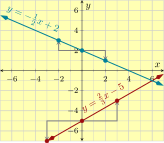
It appears that the two lines intersect where \(x=6\) and \(y=-1\text{,}\) so the solution to the system of equations would be the point \((6,-1)\text{.}\) However we should check that \((6,-1)\) actually works as a solution to each of the original equations.
\begin{equation*}
\begin{aligned}
y\amp=\frac{2}{3}x-5\amp y\amp=-\frac{1}{2}x+2\\
\substitute{-1}\amp\wonder{=}\frac{2}{3}(\substitute{6})-5\amp \substitute{-1}\amp\wonder{=}-\frac{1}{2}(\substitute{6})+2\\
-1\amp\confirm{=}4-5\amp -1\amp\confirm{=}-3+2
\end{aligned}
\end{equation*}
This verifies that \((6,-1)\) is the solution.
Checkpoint 4.1.12.
Solve the following system of equations by graphing. Note that the equations are in standard form. To review plotting a line equation that is in standard form, see Section 3.7.
\begin{equation*}
\left\{
\begin{alignedat}{4}
x \amp {}-{} \amp 3y \amp {}={} \amp {-12} \\
x \amp {}+{} \amp y \amp {}={} \amp {-4}
\end{alignedat}
\right.
\end{equation*}
Explanation.
Both of these equations are written in standard form. The first equation, \(x-3y=-12\text{,}\) has \(x\)-intercept at \((-12,0)\) and \(y\)-intercept at \((0,4)\text{.}\) The second equation, \(x+y=-4\text{,}\) has \(x\)-intercept at \((-4,0)\) and \(y\)-intercept at \((0,-4)\text{.}\) We can use this information to graph both lines.
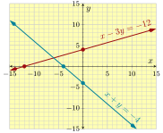
It appears that the two lines intersect where \(x=-6\) and \(y=2\text{,}\) so the solution to the system of equations would be the point \((-6,2)\text{.}\) However we should check that \((-6,2)\) actually works as a solution to each of the original equations.
\begin{equation*}
\begin{aligned}
x-3y\amp=-12\amp x+y\amp=-4\\
\substitute{-6}-3(\substitute{2})\amp\wonder{=}-12\amp \substitute{-6}+\substitute{2}\amp\wonder{=}-4\\
-6-6\amp\confirm{=}-12\amp -4\amp\confirm{=}-4
\end{aligned}
\end{equation*}
This verifies that \((-6,2)\) is the solution.
Checkpoint 4.1.13.
Solve the following system of equations by graphing. Note that the equations are in point-slope form. To review plotting a line equation that is in point-slope form, see Section 3.6.
\begin{equation*}
\left\{
\begin{alignedat}{3}
y \amp {}={} \amp 3(x-2) \amp {}+{} \amp 1 \\
y \amp {}={} \amp -\tfrac{1}{2}(x+1) \amp {}-{} \amp 1
\end{alignedat}
\right.
\end{equation*}
Explanation.
Both of these equations are written in point-slope form. The first equation, \(y=3(x-2)+1\text{,}\) passes through \((2,1)\) and has slope \(3\text{.}\) The second equation, \(y=-\frac{1}{2}(x+1)-1\text{,}\) passes through \((-1,-1)\) and has slope \(-\frac{1}{2}\text{.}\) We can use this information to graph both lines.
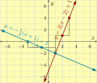
It appears that the two lines intersect where \(x=1\) and \(y=-2\text{,}\) so the solution to the system of equations would be the point \((1,-2)\text{.}\) However we should check that \((1,-2)\) actually works as a solution to each of the original equations.
\begin{equation*}
\begin{aligned}
y\amp=3(x-2)+1\amp y\amp=-\frac{1}{2}(x+1)-1\\
\substitute{-2}\amp\wonder{=}3(\substitute{1}-2)+1\amp \substitute{-1}\amp\wonder{=}-\frac{1}{2}(\substitute{1}+1)-1\\
-2\amp\confirm{=}3(-1)+1\amp -2\amp\confirm{=}-\frac{1}{2}(2)-1
\end{aligned}
\end{equation*}
This verifies that \((1,-2)\) is the solution.
Checkpoint 4.1.14.
A college has a north campus and a south campus. The north campus has \(16\) thousand students, but enrollment has been declining by \(0.8\) thousand students per year. The newer south campus has only \(2\) thousand students, but enrollment has been increasing by \(0.6\) thousand students per year. If these trends continue, in how many years would the two campuses have the same number of students?
(a)
Write two equations that form a system for this scenario.
Explanation.
The north campus has initial population \(16\) and decreases with rate \(0.8\) thousand students per year. So one equation is \(y=16-0.8t\text{.}\)
The south campus has initial population \(2\) and increases with rate \(0.6\) thousand students per year. So the other equation is \(y=2+0.6t\text{.}\)
(b)
Plot the two lines.
Explanation.
For plotting, it may be helpful to write the system with the decimals converted to fractions:
\begin{equation*}
\left\{
\begin{alignedat}{3}
y \amp {}={} \amp -\frac{4}{5}t \amp {}+{} \amp 16 \\
y \amp {}={} \amp \frac{3}{5}t \amp {}+{} \amp 2
\end{alignedat}
\right.
\end{equation*}
So we see that we can use \((0,16)\) and \((0,2)\) as \(y\)-intercepts. And then for the first line, use slope triangles where we move \(5\) units to the right and then \(4\) units down. While for the second line, use slope triangles where we move \(5\) units to the right and then \(3\) units up.

(c)
Based on the graph, how long will it be until the two campuses have the same number of students?
How many students will each campus have at that time?
Explanation.
The lines cross at \((10,8)\text{.}\) So after \(10\) years, each campus will have \(8\) thousand students.
Subsection 4.1.3 Special Systems of Equations
When we studied linear equations in one variable, there were two special cases discussed in detail in Section 2.4. One of these special cases was like with the equation \(x=x+1\text{,}\) where there simply is no solution at all. The solution set is empty. The other special case is like with the equation \(x=x\text{,}\) where there are infinitely many solutions. When solving systems of two linear equations in two variables, we have similar special cases to consider.
Example 4.1.15. Parallel Lines.
Consider the graphs of two lines with the same slope, \(y=2x-4\) and \(y=2x+1\text{.}\)

For the system of equations
\begin{equation*}
\left\{
\begin{alignedat}{3}
y \amp {}={} \amp 2x \amp {}-{} \amp 4 \\
y \amp {}={} \amp 2x \amp {}+{} \amp 1
\end{alignedat}
\right.
\end{equation*}
what would the solution be? Since the two lines have the same slope, they are parallel lines and they never cross. This means that there is no solution to this system of equations. Because if there were a solution \((x_1,y_1)\) then it would be a point that is on the first line and also on the second line. So it would be a point where the two lines would cross.
When there are no solutions to a system, we can simply say that. Or we can write that the solution set is the empty set, which we can write as \(\{\text{ }\}\) or \(\emptyset\text{.}\)
When a system of two linear equations has no solution, we call the system inconsistent. The idea is that while it may possible for \(x\) and \(y\) to have the relationship given by the first equation, and while it may possible for \(x\) and \(y\) to have the relationship given by the second equation, it’s not possible for both of these relationships to happen at the same time: they are inconsistent.
Warning 4.1.17. The Symbol \(\emptyset\) is not Zero.
The symbol \(\emptyset\) is a special symbol that represents an empty set, a set with no numbers in it. You could also write the empty set as braces with nothing in between them, like \(\{\text{ }\}\text{.}\) But \(\emptyset\) is a fancy alternative. This symbol is not the same thing as the number zero. The symbol \(\emptyset\) represents a set with nothing in it. The symbol \(0\) represents the number zero. If you have an empty carton of eggs, the carton itself would be \(\emptyset\text{,}\) while \(0\) is the count of how many eggs are in that carton.
Example 4.1.18. Coinciding Lines.
Consider the graphs of two lines with equations \(y=2x-4\) and \(6x-3y=12\text{.}\) In other words, the system:
\begin{equation*}
\left\{
\begin{aligned}
\amp y = 2x - 4\\
\amp 6x - 3y = 12
\end{aligned}
\right.
\end{equation*}
To solve this system of equations, we want to graph each line. The first equation is in slope-intercept form and we graph it by starting at the \(y\)-intercept \((0,-4)\) and using the slope \(2\) to make slope triangles.
The second equation is in standard form. We find its \(x\)-intercept is \((2,0)\) and its \(y\)-intercept is \((0,-4)\text{,}\) and use this to plot the line. The two lines are plotted together in Figure 19.
Now we can see these “two” lines are actually the same line. They coincide. Can we really solve this system? Finding a solution means finding a point \((x_1,y_1)\) that is a solution to each of the two lines in the system. But apparently any point on this one line we see is actually a solution to both of the original line equations. So we have an infinite number of solutions. All points that fall on that one line are in the solution set.

It may be enough for us to report that there are infinitely many solutions, not just one. But we could also be more specific and use set-builder notation. We want to write that any ordered pair \((x,y)\) that satisfies one (or the other) of the two original line equations is actually a solution to the system. We can write that the solution set is \(\{(x,y)\mid y=2x-4\}\text{.}\)
When a system of two linear equations has infinitely many solutions, we call the system dependent. The two equation may not have looked identical, but it turned out that they represented the same line. So in a sense, the two equations “depend” on one another (since actually they are equivalent equations).
Remark 4.1.20.
In Example 18, what would have happened if we had decided to convert the second line equation into slope-intercept form?
\begin{align*}
6x-3y\amp=12\\
6x-3y\subtractright{6x}\amp=12\subtractright{6x}\\
-3y\amp=-6x+12\\
\multiplyleft{-\frac{1}{3}}(-3y)\amp=\multiplyleft{-\frac{1}{3}}(-6x+12)\\
y\amp=2x-4
\end{align*}
This is the literally the same as the first equation from that system. This is a different way to show that these two equations represent coinciding lines.
Warning 4.1.21.
Notice that for a system of equations with infinite solutions like Example 18, we didn’t say that everything is a solution. It’s only the points that are on that coinciding line that are solutions. It would be incorrect to say that the solution set is “all real numbers” or as “all ordered pairs”.
Checkpoint 4.1.22.
Solve the following system of equations by graphing.
\begin{equation*}
\left\{
\begin{alignedat}{3}
\amp5x-8y = 40\\
\amp y=\tfrac{5}{8}(x+8)-10
\end{alignedat}
\right.
\end{equation*}
Explanation.
If we graph these lines, we find they are the same line.
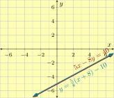
So there are infinitely many solutions: all points \((x_1,y_1)\) on that common line.
Checkpoint 4.1.23.
Solve the following system of equations by graphing.
\begin{equation*}
\left\{
\begin{alignedat}{3}
\amp y = 2x + 3\\
\amp y =2(x - 4) + 3
\end{alignedat}
\right.
\end{equation*}
Explanation.
If we graph these lines, we find they are parallel and never cross.
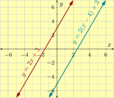
So there are no solutions to this system.
We can summarize the possibilities for a solution set to a system of two linear equations in two variables.
- Crossing Lines
-
If two linear equations make lines with different slopes, the system has one solution. That one solution is the place where the lines cross.
- Parallel Lines
-
If two linear equations make lines with the same slope but different \(y\)-intercepts, the system has no solution.
- Coinciding Lines
-
If two linear equations make lines with the same slope and the same \(y\)-intercept (in other words, they make the same line), the system has infinitely many solutions. This solution set consists of all ordered pairs on that line.
Reading Questions 4.1.4 Reading Questions
1.
What is the purpose of the one big left brace in a system of two equations?
2.
When you find a solution to a system of two linear equations in two variables, why should you check the solution?
3.
When you are checking a solution to a system of two linear equations in two variables, would it be good enough to only substitute the numbers into one of the original two equations? Why or why not?
4.
Suppose you have a system of two linear equations, and you know the system has exactly one solution. What can you say about the slopes of the two lines?
Exercises 4.1.5 Exercises
Review
Exercise Group.
Select the equations/inequalities that are linear with one variable.
1.
-
\(\displaystyle 9z+17=3\)
-
\(\displaystyle 5y+p^{2}\lt18\)
-
\(\displaystyle 2\pi r=18\pi \)
-
\(\displaystyle 8-2r^{2}\neq-20\)
-
\(\displaystyle 2.6p=7\)
-
\(\displaystyle \sqrt{1.9x+3}\leq5\)
-
None of the above
2.
-
\(\displaystyle r\sqrt{20}=-67\)
-
\(\displaystyle \pi r^{2}\neq50\pi \)
-
\(\displaystyle 4zV\gt31\)
-
\(\displaystyle \left|-1.9x-6\right|=33\)
-
\(\displaystyle x^{2}+z^{2}=-48\)
-
\(\displaystyle 16p-1\lt14\)
-
None of the above
Skills Practice
Check a Possible Solution to a System.
Check if the given point is a solution to the given system of two linear equations.
3.
Is \({\left(0,2\right)}\) a solution?
\(\left\{
\begin{alignedat}{3}
y \amp= {2\mathopen{}\left(x-1\right)+4}\\
y \amp= {-{\frac{11}{9}}\mathopen{}\left(x-9\right)-9}
\end{alignedat}
\right.\)
4.
Is \({\left(2,-5\right)}\) a solution?
\(\left\{
\begin{alignedat}{3}
y \amp= {{\frac{9}{7}}\mathopen{}\left(x-9\right)+4}\\
y \amp= {5\mathopen{}\left(x-3\right)}
\end{alignedat}
\right.\)
5.
Is \({\left(5,-4\right)}\) a solution?
\(\left\{
\begin{alignedat}{3}
\amp {4x+3y = 12}\\
\amp {-x-3y = 6}
\end{alignedat}
\right.\)
6.
Is \({\left(9,1\right)}\) a solution?
\(\left\{
\begin{alignedat}{3}
\amp {-x+4y = -4}\\
\amp {-x+y = -7}
\end{alignedat}
\right.\)
7.
Is \({\left(0,-5\right)}\) a solution?
\(\left\{
\begin{alignedat}{3}
y\amp= {-{\frac{1}{8}}x-5}\\
y\amp= {-{\frac{13}{8}}x+7}
\end{alignedat}
\right.\)
8.
Is \({\left(7,-2\right)}\) a solution?
\(\left\{
\begin{alignedat}{3}
y\amp= {-{\frac{4}{7}}x+2}\\
y\amp= {-{\frac{6}{7}}x}
\end{alignedat}
\right.\)
Identify Solution from Graph.
The graph of two lines represents a system of two linear equations. Use the graph to identify the solution to the system.
9.
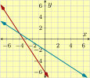
10.
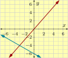
11.
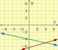
12.
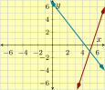
13.
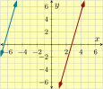
14.
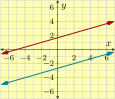
See How Many Solutions.
Simply by looking closely at the linear equations, determine how many solutions the system will have. And state whether the system is dependent, inconsistent, or neither.
15.
\(\left\{
\begin{alignedat}{3}
y \amp= {{\frac{8}{5}}\mathopen{}\left(x-1\right)+3}\\
y \amp= {{\frac{4}{5}}x}
\end{alignedat}
\right.\)
16.
\(\left\{
\begin{alignedat}{3}
y \amp= {{\frac{9}{5}}\mathopen{}\left(x-9\right)-3}\\
y \amp= {{\frac{1}{4}}x+1}
\end{alignedat}
\right.\)
17.
\(\left\{
\begin{alignedat}{3}
y \amp= {x-8}\\
y \amp= {x-5-3}
\end{alignedat}
\right.\)
18.
\(\left\{
\begin{alignedat}{3}
y \amp= {-6x-6}\\
y \amp= {-6\mathopen{}\left(x+2\right)+6}
\end{alignedat}
\right.\)
19.
\(\left\{
\begin{alignedat}{3}
y \amp= {{\frac{1}{9}}x-4}\\
y \amp= {{\frac{1}{9}}x+2}
\end{alignedat}
\right.\)
20.
\(\left\{
\begin{alignedat}{3}
y \amp= {{\frac{5}{4}}x-2}\\
y \amp= {{\frac{5}{4}}x-6}
\end{alignedat}
\right.\)
Solve a System.
Solve the given system of linear equations graphically.
21.
\(\left\{
\begin{alignedat}{3}
y \amp= {5x-9}\\
y \amp= {-13x+9}
\end{alignedat}
\right.\)
22.
\(\left\{
\begin{alignedat}{3}
y \amp= {{\frac{9}{2}}x-1}\\
y \amp= {{\frac{5}{2}}x+3}
\end{alignedat}
\right.\)
23.
\(\left\{
\begin{alignedat}{3}
y \amp= {{\frac{7}{2}}\mathopen{}\left(x-8\right)+9}\\
y \amp= {{\frac{1}{13}}\mathopen{}\left(x+7\right)+1}
\end{alignedat}
\right.\)
24.
\(\left\{
\begin{alignedat}{3}
y \amp= {{\frac{1}{9}}\mathopen{}\left(x-1\right)-2}\\
y \amp= {{\frac{11}{7}}\mathopen{}\left(x+1\right)+8}
\end{alignedat}
\right.\)
25.
\(\left\{
\begin{alignedat}{3}
y \amp= {{\frac{8}{5}}\mathopen{}\left(x-3\right)-2}\\
y \amp= {{\frac{8}{5}}\mathopen{}\left(x-6\right)+9}
\end{alignedat}
\right.\)
26.
\(\left\{
\begin{alignedat}{3}
y \amp= {-4\mathopen{}\left(x+6\right)-2}\\
y \amp= {-4\mathopen{}\left(x-2\right)-1}
\end{alignedat}
\right.\)
27.
\(\left\{
\begin{alignedat}{3}
\amp {-x-2y = 4}\\
\amp {-x+2y = -8}
\end{alignedat}
\right.\)
28.
\(\left\{
\begin{alignedat}{3}
\amp {5x-3y = -15}\\
\amp {x-y = -1}
\end{alignedat}
\right.\)
29.
\(\left\{
\begin{alignedat}{3}
\amp y={{\frac{3}{2}}x+5}\\
\amp {x-2y = -2}
\end{alignedat}
\right.\)
30.
\(\left\{
\begin{alignedat}{3}
\amp y={{\frac{8}{3}}x}\\
\amp {-4x+y = -4}
\end{alignedat}
\right.\)
31.
\(\left\{
\begin{alignedat}{3}
\amp {2x+y = 4}\\
\amp y={-2x-4}
\end{alignedat}
\right.\)
32.
\(\left\{
\begin{alignedat}{3}
\amp {-x+3y = -3}\\
\amp y={{\frac{1}{3}}x+2}
\end{alignedat}
\right.\)
33.
\(\left\{
\begin{alignedat}{3}
\amp y={{\frac{3}{4}}\mathopen{}\left(x-3\right)-3}\\
\amp {-x+y = -4}
\end{alignedat}
\right.\)
34.
\(\left\{
\begin{alignedat}{3}
\amp y={-{\frac{10}{3}}\mathopen{}\left(x+2\right)-4}\\
\amp {3x+5y = 15}
\end{alignedat}
\right.\)
35.
\(\left\{
\begin{alignedat}{3}
\amp {x-5y = -5}\\
\amp y={{\frac{1}{5}}\mathopen{}\left(x-5\right)+2}
\end{alignedat}
\right.\)
36.
\(\left\{
\begin{alignedat}{3}
\amp {-3x-4y = 12}\\
\amp y={-{\frac{3}{4}}\mathopen{}\left(x+8\right)+3}
\end{alignedat}
\right.\)
37.
\(\left\{
\begin{alignedat}{3}
y \amp= {-{\frac{1}{2}}x+3}\\
y \amp= {-2\mathopen{}\left(x-1\right)-5}
\end{alignedat}
\right.\)
38.
\(\left\{
\begin{alignedat}{3}
y \amp= {-3x-7}\\
y \amp= {{\frac{4}{3}}\mathopen{}\left(x+5\right)-5}
\end{alignedat}
\right.\)
39.
\(\left\{
\begin{alignedat}{3}
y \amp= {8x+1}\\
y \amp= {8\mathopen{}\left(x+1\right)-7}
\end{alignedat}
\right.\)
40.
\(\left\{
\begin{alignedat}{3}
y \amp= {-{\frac{5}{2}}x+9}\\
y \amp= {-{\frac{5}{2}}\mathopen{}\left(x-2\right)+4}
\end{alignedat}
\right.\)
Applications
41.
Dana is organizing an office lunch party. Her budget for beverages is \({\$140}\) and she will try to spend all of it. She assumes that \(34\) people will attend, and there should be two beverages available per person. Dana has decided to order cans of a fancy beverage that cost \({\$2.50}\) each, and cans of a cheaper beverage that cost \({\$1.75}\)each. How many of each should she order?
(a)
Write two equations that form a system for this scenario.
(b)
Plot the lines for the system of two equations.
(c)
Based on the graph, how many of the more expensive beverage should Dana buy?
How many of the less expensive beverage should Dana buy?
42.
At the local hardware store, Precious bought a hammer and four boxes of nails. The total cost was \({\$28}\text{.}\) The hammer costs \({\$18}\) more than a box of nails. How much does a hammer cost and how much does one box of nails cost?
(a)
Write two equations that form a system for this scenario.
(b)
Plot the lines for the system of two equations.
(c)
Based on the graph, how much does the hammer cost?
How much does a box of nails cost?
43.
Dane enters a grassy field from some dense trees. His dog is standing out in the field, \({150\ {\rm ft}}\) away. As soon as they see each other, they start running toward each other. Dane runs with speed \({3\ {\textstyle\frac{\rm\mathstrut m}{\rm\mathstrut s}}}\) and his dog runs with speed \({12\ {\textstyle\frac{\rm\mathstrut m}{\rm\mathstrut s}}}\text{.}\) How long will it be until they meet?
(a)
Write two equations that form a system for this scenario.
(b)
Plot the lines for the system of two equations.
(c)
Based on the graph, how long will it be until they meet?
How far will that be from the place where Dane started?
44.
A cyclist riding at \({20\ {\textstyle\frac{\rm\mathstrut ft}{\rm\mathstrut s}}}\) rides past a dog. A moment later, when the bicycle is \({40\ {\rm ft}}\) away, the dog begins to chase the bicycle at a speed of \({30\ {\textstyle\frac{\rm\mathstrut ft}{\rm\mathstrut s}}}\text{.}\) Assuming the cyclist does not change course or speed, how long will it be until the dog catches up to the bicycle?
(a)
Write two equations that form a system for this scenario.
(b)
Plot the lines for the system of two equations.
(c)
Based on the graph, how long will it be until the dog catches up with the bicycle?
How far will that be from the place where the dog started running?